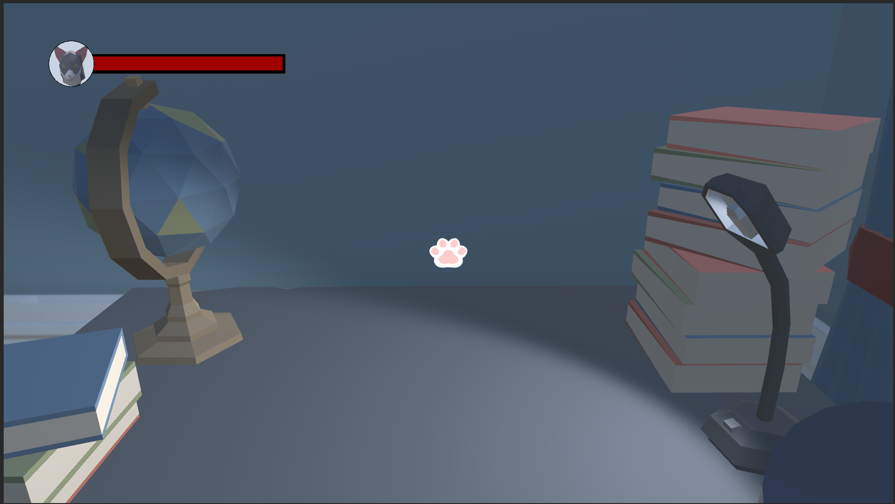

Cat game
3D Cat game Ontsnap het huis


Dit project is gemaakt met het idee dat je speelt als een kat die probeert te ontsnappen uit het huis van een oude oma. Je doel is om de sleutels te vinden door onderweg objecten kapot te maken om hun verstopplekken te onthullen.
Wees voorzichtig en ontwijk de oma. Als ze boos wordt, zou ze je kunnen doden! Het spel bevat tal van interactieve elementen en een duistere wending die voor extra diepgang en spanning zorgt.
Ontwikkelde vaardigheden: C#, 3D Game Development